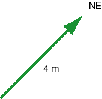

A particle undergoes a displacement (vector) of magnitude 4 m pointing NE. The particle undergoes this displacement in 0.2 s. The average velocity of the particle, which is the displacement divided by the elapsed time, is a vector
(a) of magnitude 20 m/s pointing NE
(b) of magnitude 0.8 m/s pointing NE
(c) of magnitude 2.0 m/s pointing NE
(d) of magnitude 8.0 m/s pointing NE